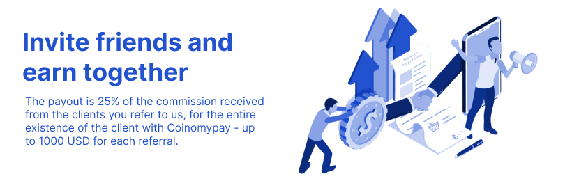

Referral Program
You may have already heard that many large platforms create referral systems to attract new users to a team of like-minded people. This is beneficial for both parties: the site gets the opportunity to advertise among a larger number of people, as well as the opportunity to attract a new audience from trusted persons, that is, you — our clients, and you get a good reward for inviting new project participants.
How does it work?
The referral system on our exchange is divided into three stages:
A :a group of people who registered directly with your link B :friends of your referrals, who, in turn, were invited by category “A” referrals and registered by their referral code C :registered users on a referral link of a referral from category “B” Thus, the Monowork.com referral system consists of three stages.
Who are referrals and why are they needed?
A referral is a partner program participant who has registered on the recommendation of another participant. A referral is also a full-fledged user of the Monowork.com Exchange, without any restrictions. The person who brought the new member to the project will receive a commission (referral). Accordingly, the more people click on the link, the more passive earnings the referrer will have
What kind of reward awaits you?
As we mentioned above, the updated referral system includes as many as three stages of referrals, respectively, the rewards will also vary for you depending on your category. For category A referrals you get 50% of the commission, category B referrals will bring you 10%, and for category C you will get 2.5% of the commission.
For each referral you will receive your percentage, but this percentage will depend on the referral category: A, B or C.
At the moment, the referral system and the ability to create an unlimited number of referral codes are only available to premium users.
Monowork.com referral program packs these key features:
- No referral limits - You can refer as many friends as possible; you and your friends will each get refferal bonus in BTC equivalent after they complete their verification.
- Anyone can participate - Available for all eligible Trading users, no BTC/ETH/BCH staking required to refer friends.
- Bonus credited instantly - Your friends can use their sign-up bonus immediately after they passing verification.
- Get rewards for your friends deposit - For each new friend you will receive 0.01% (in BTC) of the sum of all his deposits.
Creation your referral link
Go to the settings page and click on the link "Click here to get your referral link". Enter your referral code in the field and click "Create". Please note that the code should include letters and numbers and be at least 8 and no more than 12 characters.